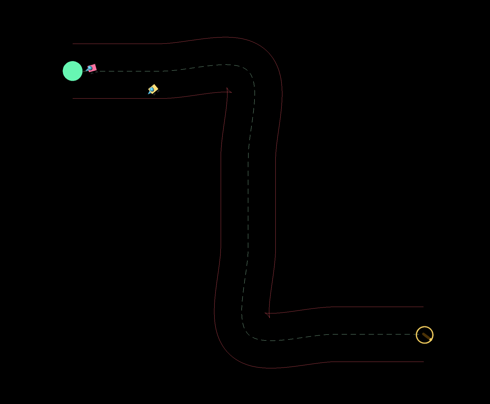

My Project
作品
制作した作品の一覧です。各ボタンから詳細へ移動できます。
List
Project Index
Detail
Project Details
Reinforcement Learning in 3D
動機
YouTubeを見ていると強化学習の実装例としてロボットが道を学習させる動画が多数あります。その仕組みを知りたいと思い実装しました。
概要
簡易的な強化学習をJavaScriptのthree.jsを用いて作成しました。
ロボットはスタート地点からゴールまで道を外れずに走り切ることを目標に、 試行錯誤を繰り返しながら自律的に走り方を習得します。複数台のロボットが同じQテーブルを共有することで、 並列学習による高速化にも対応しています。
実際の画面
パラメータを変更しながら学習を行う流れを確認することができます。 試行回数が2000回程度になると道の学習が可能となっています。
道路の作成
自分で道路を作成することが可能です。


Realtime Echo Processing
動機
リアルタイム処理の大変さを経験してみたかった。概要
ASIO4ALLを用いてリアルタイム音声入出力を行い、入力音声にエコー処理を加えて出力するC/C++プロジェクトです。 本プロジェクトでは、低遅延な音声処理を実現するためにASIOドライバを利用し、 マイクなどから取得した音声データに対してリアルタイムでエコー処理を行います。
Echo processing result
Scattered-car
学校のCG基礎の授業課題で作成した作品です。